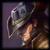

Mid · patch 26.22 · 94,305 games in Global Emerald+ · updated 14 Nov 2026
Above average in all 12 datasets (+0.5 to +1.9). Sites disagree: U.GG gives S, dpm.lol gives C.
Right = picked more, up = wins more. Bottom right are the traps. Tap a portrait to open it.
Strong and often picked, adjusted for how often it is already banned.
Picked in 5%+ of games, still below average.
Change in score, Global Emerald+.
From the patch preview.